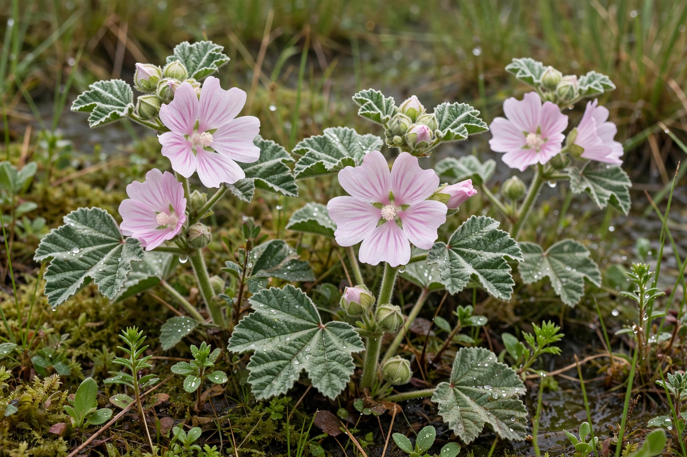

Althaea officinalis
| Scientific classification | |
|---|---|
 | |
| Marsh mallow in flower | |
| Kingdom | Plantae |
| Order | Malvales |
| Family | Malvaceae |
| Genus | Althaea |
| Species | A. officinalis |
| Binomial name | Althaea officinalis L. |
Althaea officinalis, the marsh mallow or marshmallow, is a species of flowering plant indigenous to Europe, western Asia and North Africa, which is used in herbalism and as an ornamental plant. It grows in damp, marshy ground, especially salt marshes and the banks of rivers and canals.
Description
The stems, which die down in autumn, reach typically 90 to 120 cm (3 to 4 ft) in height, occasionally up to 2 m. The leaves are ovate-cordate, softly velvety with dense stellate hairs, and shallowly lobed. The flowers are pale pink, about 3 cm across, borne in the leaf axils in late summer. The root is thick, fleshy, and rich in mucilage, whitish-yellow outside and white and fibrous within.
Uses
The plant has been used in medicine since ancient Egyptian times. The root mucilage was traditionally whipped with sugar and egg white to make the confection that gave the modern marshmallow its name, although commercial marshmallows are now made from starch, gelatin and corn syrup instead. In herbal medicine, preparations of the root and leaf have been used as demulcents for coughs, sore throats and minor digestive irritation. The generic name Althaea derives from the Greek altho, "to heal".